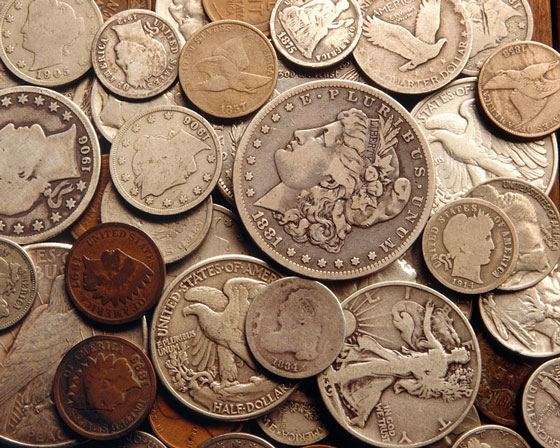

•My Hobbies•
Back in the day, leisure time was not thought of as a chance to "veg out," but as opportunity to pursue one’s passions and interests, an outlet for the sides of a man that were not stimulated in one’s career. Unfortunately, we now often spend our leisure time camped out in front of the TV or computer. We say that modern life has become too stressful, that when we have free time, laying on the couch is all we can manage.
The truth is that spending our leisure time in satisfying pursuits, "fun work," will refresh us far more than a non-stop marathon of playing Call of Duty. Hobbies can bring you joy, increase your eye for detail, keep your mind sharp, expand your creativity, and help you meet friends and learn valuable skills. They add interest to your life and help you become a more well-rounded man. If you’ve been feeling depressed, restless, or apathetic, the problem may be the lack of having something in your life you feel passionate about, something that brings you needed fulfillment.
| Sr. No. | My Hobbies |
|---|---|
| 1. | Chess |
| 2. | Reading |
| 3. | Metalworking |
| 4. | Collecting |
| 5. | Photography |
| 6. | Drawing And Painting |
| 7. | Amateur Astronomy |
| 8. | Computer programming |
If you’r favorite hobby isn’t on the list, don’t get your knickers in a knot.
Chess

The Morals of Chess. In it Franklin argued that playing chess created "valuable qualities of the mind, useful in the course of human life, [that] are to be acquired or strengthened by it, so as to become habits, ready for all occasions. For Life is a kind of Chess…” What better way to pass the time with a friend than to play a game that makes you a better man.
Reading
Men today just do not read, but there couldnot be a manlier hobby. Though i have read a bit of novels (maybe around 15) but what i prefer to more read is Hawking's noovels.
Metalworking

Metalworking has all the benefits of woodworking, except instead of the sweet smell of sawdust, you surround yourself with the delightfully noxious smell of burning metal. I picked up metal working in my 9th Grade. And in still continue pursuing it.
Collecting
Collecting things is something a lot of men love and most women just don’t get. Females are multi-taskers, while the male brain likes to single-mindedly zero in on something. We tend to get obsessed with things. Take this tendency and couple it with man’s primordial desire for the hunt, and there you have a man’s love for collecting. A man can spend a lifetime looking for that final item to complete his collection. It becomes his obsession.Of course, completing a collection is usually anti-climatic. In collecting, the thrill is in the chase. Pick your poison. Duck stamps, baseball cards, antique typewriters, whatever. Just don’t get too carried away with it.
Photography
If you’ve always wanted to pick up an art, but don’t have the painter’s touch, try photography. With digital cameras and digital editing software becoming cheaper, photography as a hobby is more popular and accessible than ever. One benefit of photography as a hobby is that you can combine other interests with it. Love the outdoors? Snap some nature photos while on your hike.
Drawing and Painting

Painting requires a bit more set up and cost depending on the type of painting you want to do. Watercolor painting is cheaper (and easier to clean up) than oil painting. Most hobby and art stores provide drawing and painting classes. If you’re too cheap for that, you can always watch the man with the greatest white-man fro in history,
Amateur Astronomy
Space. The final frontier. While you might not be able to actually visit space, you can still get caught up in its awe and majesty right from your backyard. You’d be surprised what sorts of things you can see in space with a small telescope or even a pair of high powered binoculars. If you really want to see deep into space, you’ll need to get a high powered telescope which of course will set you back a thousand dollars or so. But the payoff may come when you spot something in your backyard observatory that even the big dogs at NASA haven’t caught; amateur astronomers have made several big discoveries. And remember that astronomy is more than just looking in a telescope; it’s also learning as much as you can about our wondrous universe from books, shows, and lectures.
Computer Programming
Many men have made computer programming their living, but there are millions more who have day jobs but pound out code in their spare time just for kicks and giggles. These are the people who make silly online games, useful open source apps, and cool web projects. There’s a variety of code languages you can learn. Personally, I picked programming in my 10th Grade and I’m fond of web programming and have found W3Schools a great resource to learn PHP, SQL, and CSS completely for free.